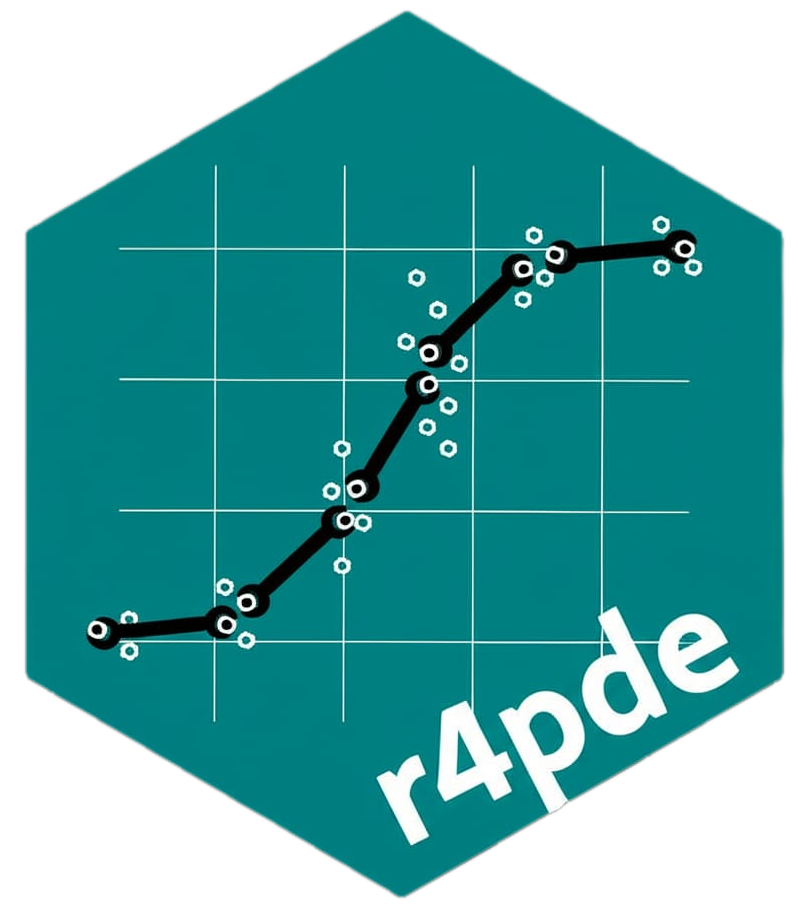

Compute functional resistance and stability-adjusted functional resistance
Source:R/functional_resistance.R
functional_resistance.RdComputes a functional resistance index (FRI) relative to a reference genotype curve. Optionally adjusts FRI by a functional instability penalty to calculate a stability-adjusted functional resistance index (SAFRI). Supports grouping genotypes into classes based on quantiles, clustering, or bootstrap-supported differences.
Usage
functional_resistance(
object,
instability = NULL,
reference,
lambda = 1,
method = c("positive_area", "l2_difference"),
scale_nfi = FALSE,
n_groups = 4,
group_method = c("none", "quantile", "bootstrap", "clustering"),
time_var = NULL,
genotype_var = NULL,
n_boot = 1000,
ci_level = 0.95,
clustering_method = c("hclust", "kmeans"),
adjust_by = NULL,
reference_within_group = FALSE,
group_within_adjust_by = TRUE,
...
)Arguments
- object
An object of class
functional_curves.- instability
Optional output from
functional_instability().- reference
Character string naming the reference genotype, or a named vector if
reference_within_group = TRUE.- lambda
Numeric penalty weight for instability. Default is 1.
- method
Character string for distance method.
- scale_nfi
Logical; if
TRUE, normalizes nFI to a 0-1 scale before applying penalty.- n_groups
Integer number of classes to group into.
- group_method
Character string for the grouping method.
- time_var
Optional variable name overrides.
- genotype_var
Optional variable name overrides.
- n_boot
Integer number of bootstrap iterations.
- ci_level
Numeric confidence level for bootstrap intervals.
- clustering_method
Character string for clustering method if
group_method = "clustering".- adjust_by
Optional character string naming a genotype-level covariate to stratify by.
- reference_within_group
Logical; if
TRUE, the reference is evaluated within eachadjust_bygroup.- group_within_adjust_by
Logical; if
TRUE, resistance classes are assigned within eachadjust_bygroup.- ...
Additional arguments.
Value
A list with a table containing genotype, FRI, nFI, SAFRI, rank, and classes,
and optionally bootstrap results.
Examples
if (FALSE) { # \dontrun{
fr <- functional_resistance(
fc,
reference = "Susceptible",
group_method = "bootstrap"
)
print(fr)
} # }